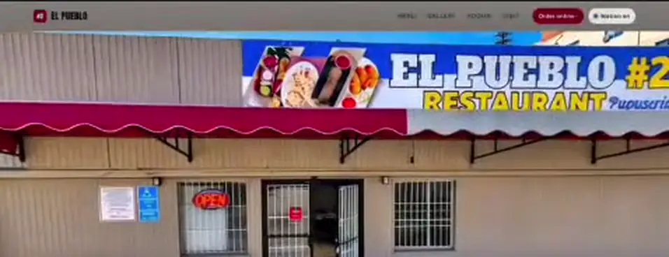
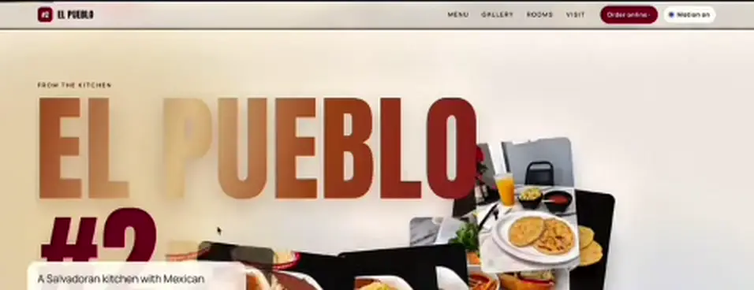
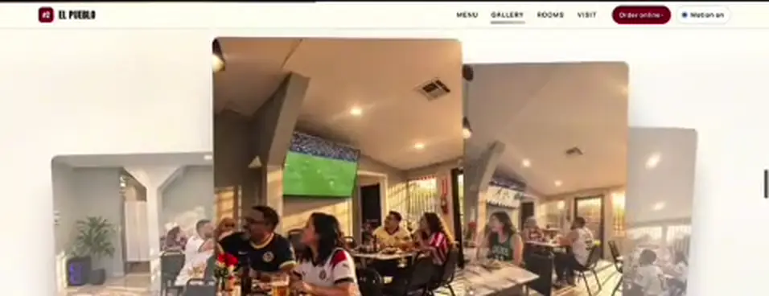
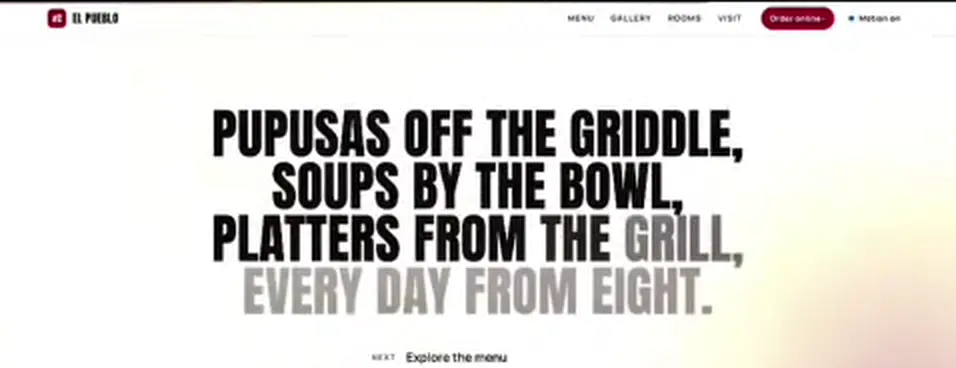
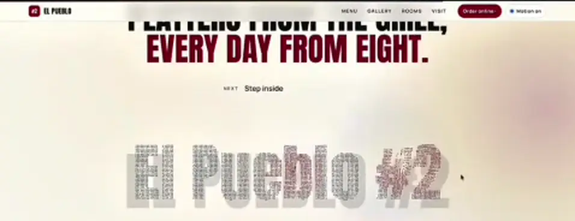
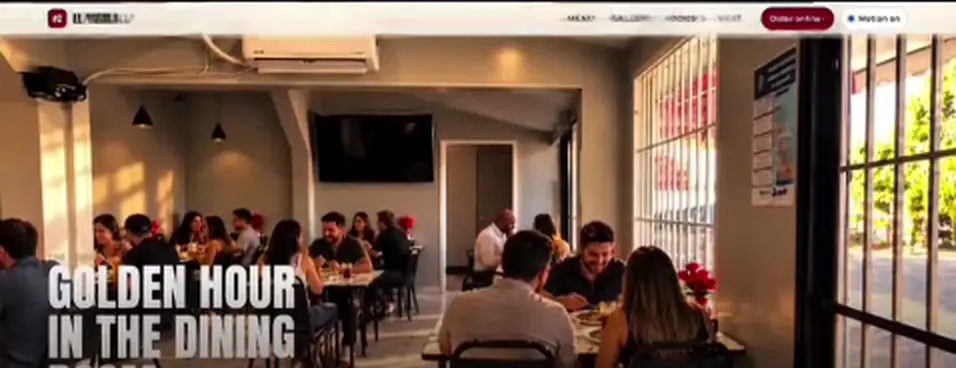

| 1 |  | Scroll-scrubbed walk from the street, through the door, around the room. | Full-bleed walk from the Level A hall to the counter, with a route bar. | The same walk inside a doorway that opens to full screen. |
| 2 | | Gold name lands letter by letter at the end of the walk. | Gold 三国冒菜 rises character by character with one light sweep. | A printed ticket with the name, the $20.80 bowl and two actions. |
| 3 |  | Plates over giant type: "From the kitchen". | Counter board with spice dial and dish cards. | Counter cards drifting over a giant 冒菜. |
| 4 | | Instagram post rising over a moving marquee. | Phone card with a room clip over two marquees. | Red ribbon marquee: "Hidden gem? Not any more." |
| 5 |  | 3D card-stack gallery: scroll, drag or arrow keys. | Scroll-driven 3D deck of six room photos with arrows. | Pinned horizontal board of menu tickets. |
| 6 |  | Statement that fills in word by word, last line in red. | "What mao cai is", ending in red on the opening hours. | Folded into the bowls section copy. |
| 7 |  | "Move across the letters" interactive name. | Spice dial does this job. | Six heats as six characters you sweep across. |
| 8 |  | Inset photo grows to full screen: "Golden hour in the dining room". | Shopfront grows to full screen: "Lanterns on till 7." | Four numbered photo steps from Queen Street. |